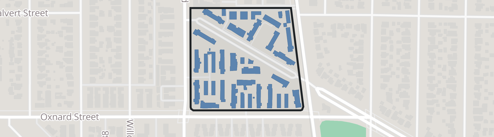
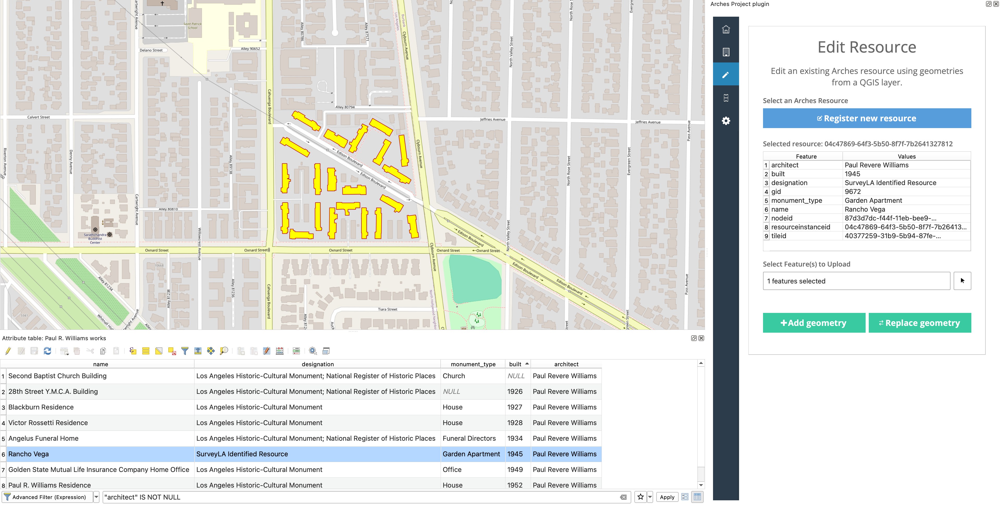

FOSS4G North America 2026 · Sacramento
Relationships Are the Data
Semantic graphs for geospatial resources, with Arches
Rob Gaston Farallon Geographics
⏱ 0:00 to 0:20
Name, Farallon Geographics, one of the core developers of Arches.
Say in the first sentence that this is a talk about Arches, the open-source platform: the title alone doesn't tell the room. Don't explain it yet. Go straight to the place.
North Hollywood, Los Angeles
What does your GIS know?
Rancho Vega, North Hollywood. Photo: HistoricPlacesLA

Its parcel, 21 apartment buildings and their garages.
AIN 2414-021-022SitusAddress 10403 EDISON WAYUseDescription Five or more apartmentsYearBuilt1 1945Units1 126
LA County Assessor parcel record. It isn't on the City's Historic-Cultural Monument layer.
⏱ 0:20 to 1:00
Ask the room the title question out loud: "What does your GIS know about this place?" Pause for a beat before you answer it.
Let the photo sit for a beat. It's deliberately ordinary: stucco, a lawn, minivans.
Click: the map. Give GIS its due: "GIS is very good at this. The parcel, all 21 apartment buildings and their garages, exactly where they are."
Click: the real assessor record for that parcel (selected fields, names as the Assessor publishes them). Read two or three fields aloud. "And it's good at attributes." It isn't designated, so it isn't on the City's monument layer either.
"By its own definition, this record is complete. It's also missing the reason this place matters: who designed it, who it was built for, what it's connected to. Those are relationships, not geometry or attributes."
Same place, with its relationships
Rancho Vega, in context
Rancho Vega
garden apartments
1945
designed by
Paul R.
Williams
first Black member of the AIA (1923)
and architect of many LA landmarks
housed workers of
Lockheed-Vega
plant
built during
World War II
home front
identified by
SurveyLA
City + Getty survey
None of those are attributes of the geometry. They are all relationships.
⏱ 1:00 to 2:00
Click 1: Paul R. Williams. LA architect; in 1923 he became the first Black member of the AIA. He worked in a city where covenants kept Black residents out of many neighborhoods he designed in.
Click 2: built in 1945 to house workers at the Lockheed-Vega aircraft plant, during the war.
Click 3: identified by SurveyLA, the City and Getty's citywide survey.
Click 4: "None of that is an attribute of the geometry. All of it is a relationship. That's the claim of this talk: the relationships are the data."
"If a project screening only looked at the parcel layer, this place wouldn't be flagged." Sources: HistoricPlacesLA lists Williams as architect; SurveyLA identified the complex.
Don't put a number on his landmarks here: the demo data has 7 of them (the Wikidata works that match HCM polygons), but there are more, for example Villa Manola (HCM 1084).
01 · The model
Arches: open source, standards-based
Open-source data management, developed with the Getty Conservation Institute and World Monuments Fund for a hard problem: describing cultural heritage.
Custom graph data models designed in app
Edit and review in app: workflows, provisional edits
Uncertain dates, fuzzy extents, dense relationships
Native semantic data
Records that outlive the software (self-describing)
AGPL-3.0, OSS stack PostgreSQL/PostGIS, Django
Ontology-backed Each graph can be based on known ontologies such as CIDOC CRM (ISO 21127)
Vocabularies, linked data SKOS thesauri; JSON-LD export
The demo uses the community's open arches-her models, plus a few US terms.
⏱ 2:00 to 2:40
Built for heritage because heritage is hard: uncertain, relationship-dense, long-lived.
HistoricPlacesLA, the City's historic resources inventory and the source of the Rancho Vega photo, is an Arches deployment. Say so: the story isn't hypothetical.
Point at the stack card: it runs on what this room already runs. Say the licence exactly: AGPL-3.0 , not "GPL". If asked about the map library: MapLibre from Arches 8.2 (upcoming); 8.1 still ships mapbox-gl 1.13, the last BSD-licensed release.
Standards in one breath: "CIDOC CRM, an ISO-standard ontology for heritage, for meaning; SKOS for terms; JSON-LD out." Skip its lineage (ICOM, the documentation committee); save it for questions.
Editing bullet, in one breath: it isn't only search and visualization. You edit and review the data in Arches too; the demo ends on a provisional edit waiting for review.
arches-her: models built for Historic Environment Records in England.
01 · The model
Graphs inside and between resources
Inside a resource model
P12i was present at
O18i was altered by
P53 has location
P14 carried out by
P2 has type
P10 falls within
Rancho Vega
E18 Physical Thing
Activity
E7
Paul R. Williams
E21 Person
Architect
E55 Type
Construction
E11 Modification
World War II
E4 Period
Geometry
GeoJSON in PostGIS
Between resources
Paul R.
Williams
Rancho Vega
28th Street YMCA
Second Baptist Church
Golden State Mutual
Lockheed-Vega
Angelus Funeral Home
Every node-edge-node path is a triple: subject → predicate → object , for example Activity → P14 carried out by → Paul R. Williams . Paths simplified.
⏱ 2:40 to 3:15
Left: a resource model is itself a graph; each node (box) has an ontology class and each edge (line) a property. Trace one edge with your hand: Activity, P14 carried out by, Paul R. Williams.
These are the real arches-her paths, simplified: the actor sits one activity deeper (under P9 consists of), and the geometry sits under the location's E53 Place. Slide 9 shows the full path, so if anyone spots the difference, that's why.
World War II is a node too: the construction falls within a Period resource, so "built during the war" is a link, not a string.
Click: resources link to each other, so the whole dataset becomes a network.
Define "triple" in one breath. Don't say RDF more than once.
01 · The model
Models are designed in the app
The arches-her Person model in Arches' graph designer: each branch has a CIDOC CRM class (E21 Person, E67 Birth, E41 Appellation...).
⏱ 3:15 to 3:30
One beat: "And you don't write these by hand. Subject matter experts build them here, in Arches' graph designer." Then move on.
The Person model is easier to read on screen than Monument (431 nodes).
01 · The model
Keep your features: Arches speaks GIS
Arches complements your GIS. It doesn't replace it.
PostGIS
Geometry lives with the rest of your data
Spatial views
Open in QGIS; publish with GeoServer or pg_featureserv
APIs
GeoJSON, vector tiles
GIS plugins
Edit geometries directly in your GIS: QGIS (QGIS 3 for now) and GeoLibre (experimental, Arches 8.2)

QGIS reading a PostGIS view, beside the Arches plugin. The architect column comes from Arches relationships.
⏱ 3:30 to 4:10
Read the tagline. This isn't a choice between them: "Features are fast, familiar and powerful. Keep them, and keep your GIS tools for editing and analysis. Arches stores geometry in PostGIS; the question is where the context lives."
Point at the QGIS table: an ordinary PostGIS view, but the architect column is a relationship, not a field anyone typed in. The view has a designation column too; it's hidden in the screenshot, because which of his works aren't landmarks is the demo's question.
On the right, the Arches QGIS plugin (archesproject/arches-qgis): signed in to the demo as a contributor, with Rancho Vega selected as the resource to edit. It adds or replaces a resource's geometry from any QGIS feature (the Add and Replace geometry buttons), through the Arches API, with Arches permissions. Say plainly that it needs QGIS 3 (it imports PyQt5); a QGIS 4 / Qt6 port is one of the asks on slide 12. The screenshot is QGIS 3.44 LTR.
OGC: Arches doesn't serve OGC APIs itself. Its spatial views are plain PostGIS, so GeoServer or pg_featureserv can publish them. A native OGC API Features endpoint is on the help-wanted list (slide 12).
The table only holds works with polygons. Two more undesignated LA works (UCLA La Kretz, Hahn Hall) are points; they show up in the demo query.
Be candid: the GeoLibre plugin is experimental and depends on Arches 8.2, which hasn't been released yet.
Transition: "Let me show you what this looks like with real Los Angeles data."
02 · Demo
Arches + GIS, real LA data
Screen a corridor: what's here, and why does it matter?Follow the relationships: from a parcel to an architect to a city-wide networkQuery across relationships: which of his works aren't landmarks?Bring it into your GIS: GeoLibre, in both directions
1,343 LA Historic-Cultural Monuments (City Planning) · Wikidata · LA County Assessor · OpenStreetMap
⏱ 4:10 to 10:10: 6 minutes, live. Arches for steps 1 to 3 (about 3:30), then GeoLibre for step 4 (about 1:50). Script: notes/foss4gna/demo_script.md.
Searching is arches-search (Arches' new search app): the corridor in step 1 and the query in step 3, ending on its SQL. In step 2, the Rancho Vega result's "Related" link opens Arches' relationship graph on a page of its own (a small plugin in the demo project), since arches-search doesn't have a graph yet. The old search page doesn't appear at all.
Say "Let's see it live", not "I'll attempt a demo".
Step 1: say "1,343 monuments" (not "1.4 thousand"). Rancho Vega is in North Hollywood ; the Lockheed-Vega plant is in Burbank .
Step 2: skip the report. Go from the step 1 result straight to Related and name the relationships on the graph.
Step 3: say why before you build it: "This query hops across relationships: monument to person to Williams, and monument to designation." Build it, read the plain-language query aloud, then show the SQL as the proof: the AND NOT EXISTS is the graph question in SQL this room already knows.
Step 4: GeoLibre is already signed in as demo_contributor (set up before the talk). After the push, go straight to the review tab; no search detour.
After step 4, come back and press RIGHT for "Data that are self-describing & legible".
If the live demo fails: press DOWN for the full recorded demo (captioned). Don't troubleshoot on stage. The video is 3:21 against 6 minutes live, so the spare 2–3 minutes go to questions; don't fill them by retrying the live demo.
Demo recording (3:21)
The full demo as one captioned video: the corridor search in arches-search, Rancho Vega's record and labelled relationships, Williams's works, the "not landmarks" query in arches-search and its SQL, Arches in GeoLibre, mapping the Lockheed-Vega plant, and the review in Arches.
Press play (it doesn't autoplay) and narrate over the captions. Press F on the video for full screen.
Recorded with scripts/record-demo.mjs.
Press RIGHT to rejoin the main deck.
03 · The payoff
Data that are self-describing & legible
In a flat table
BLT_BY: "P. Williams"
Who? What relationship? In what role? It doesn't say.
The same fact, exported from Arches as JSON-LD Rancho Vega's real export, one path kept.
{
"@type": "crm:E18_Physical_Thing",
"crm:P12i_was_present_at": {
"@type": "crm:E7_Activity",
"crm:P9_consists_of": {
"@type": "crm:E7_Activity",
"crm:P14_carried_out_by" : {2
"@id" : ".../resources/8ec6c939-…" ,1 → Paul R. Williams
"@type" : "crm:E21_Person" "rdfs:label" : "Architect" 3
} } }
1 Who? A person record with a stable id, not a name string2 What relationship? P14 carried out by , a published definition3 In what role? Architect , a vocabulary term
An AI agent can follow P14 carried out by . It can only guess what BLT_BY means.
⏱ 10:10 to 11:10
Top: what most systems store. Below it: what Arches exports for the same fact. It's the real export with one path kept: tile ids removed, namespaces shortened, whitespace compacted, nothing reordered.
Point at the arrow: "This id is Paul R. Williams's record." The arrow is an annotation, not part of the export.
Don't read the JSON. The dimmed lines are structure; the numbered, highlighted lines answer the three questions the flat table can't, matching the numbered list beside the code.
"Who is P. Williams? Which one? In what role? The export answers all three without a data dictionary." Point at each: the @id is a Person record, not a string; P14 has a published CIDOC CRM definition; Architect is a vocabulary term."BLT_BY is legible to whoever made the table. This is self-describing: it carries its own meaning." AI, concretely: hand an agent the question from the demo, "which of Williams's works aren't landmarks?" With this export it follows P14 to a Person with a stable id and checks the designation type. With the flat table it has to guess that BLT_BY is an architect and that "P. Williams" is the same person everywhere.
The same explicit structure is what makes the data FAIR for people: findable, interoperable, reusable.
If a CIDOC CRM person asks: the inner activity is arches-her's grouping for associated actors; the construction itself is an E11 Modification linked with CRMsci O18i.
03 · The payoff
The parcel layer said "five or more apartments, 1945."
The graph shows significance before the bulldozer arrives. Integrated spatial and semantic data means fewer surprises, faster review, and better decisions.
⏱ 11:10 to 11:40
Go back to the (hypothetical) corridor screening from the demo. The query that found Rancho Vega ran through "designed by", not through anything on the parcel.
Generalize: the same is true for utilities, transportation and natural resources.
04 · Beyond heritage
Not just heritage
Port of San Francisco Development projects, permitting, environmental review
Union Sanitary District East Bay wastewater collection and treatment
BC Fossil Management System Fossil sites, collections and permits
Arches for Science Conservation science lab data; heritage-adjacent
One open core, many applications: heritage inventories · Arches for Science · RaSColls (reference and sample collections) · Lingo (shared vocabularies)
Open source
Come build with us
Slides: rgaston.com/foss4gna_2026
Arches on GitHub
archesproject.org
⏱ 12:10 to 13:00
This is the FOSS4G ask: use it, break it, contribute.
The help-wanted list is concrete. The QGIS plugin still needs QGIS 3 (PyQt5), and most of this room is on QGIS 4, so a Qt6 port is the most useful thing someone here could do. OGC API Features is a bigger project; say so.
The GeoLibre plugin is experimental: say so, and invite people to try it and file issues. It's exactly the kind of thing this room tests.
Leave the slide up while people scan the codes. The slides URL goes live before the talk, and it links everything else.
Thank you
Questions?
Your GIS knows where things are.
Rob Gaston · Farallon Geographicsrgaston [at] fargeo [dot] com · rgaston.com/foss4gna_2026
Data: LA City Planning (HCM layer), HistoricPlacesLA (photo), LA County Assessor, Wikidata (CC0), © OpenStreetMap contributors (ODbL).
⏱ about 13:00, then Q&A. Planned at 13 so it lands under 15 even when it runs long; that leaves 5–7 minutes for questions.
End on the takeaway: read it, then "Thank you." Not "that's all I've got." It answers slide 2's "What does your GIS know?", so the talk ends where it started.
"How do you get data in?": press DOWN for the backup slide.
Prepared answers are in notes/foss4gna/outline.md ("Likely questions").
Backup: getting data into Arches
Getting data into Arches
Resource editor and workflows
Forms generated from the model; guided, multi-step workflows for common tasks
Data Manager (bulk)
Import a single CSV, branch or tile Excel, Arches JSON or JSON-LD; bulk edit and delete
Provisional edits and review
Contributors propose; reviewers approve. Edits from GIS plugins arrive this way too.
GIS plugins
Geometry from QGIS or GeoLibre, with Arches permissions
APIs
REST and JSON-LD, for integrations and scripted loads
Packages
Models, vocabularies and business data loaded from the command line
Backup, only if asked how data gets in. The demo data (City monuments, Wikidata, Assessor) was loaded by a script, a Django management command written for the demo.


 Slides: rgaston.com/foss4gna_2026
Slides: rgaston.com/foss4gna_2026 Arches on GitHub
Arches on GitHub archesproject.org
archesproject.org